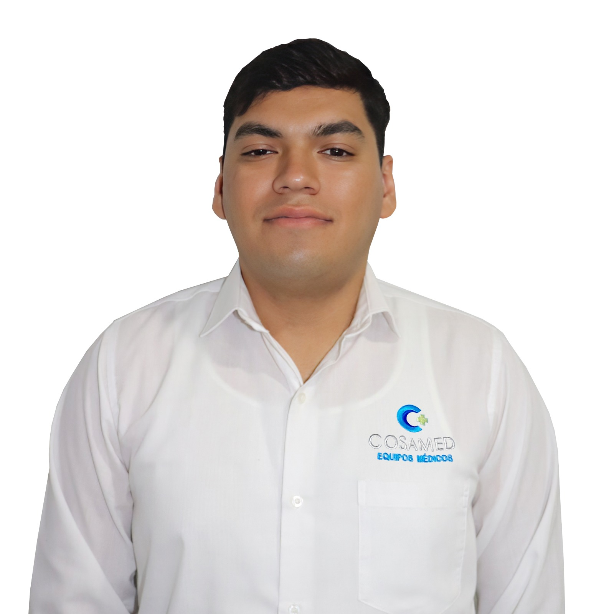

Sobre mí

Mi nombre es Luis Francisco Salido Varela. Actualmente estudiante de ingenieria en software en ITSON
Me considero una persona proactiva, con interés en resolver problemas técnicos y aprender nuevas herramientas que me ayuden a mejorar en el área de tecnologías de la información.
Objetivo profesional
Mi objetivo es fortalecer mis conocimientos en desarrollo web con esta pagina
Habilidades técnicas
- Soporte técnico a usuarios
- Diagnóstico y reparación de equipos de cómputo
- Instalación y configuración de software
- Mantenimiento preventivo y correctivo
- Administración básica de redes
- Manejo de plataformas de tickets
- Uso de Microsoft 365 Admin Center
- Uso de Excel, SharePoint y OneDrive
Lenguajes y bases de datos
- Java
- Python
- JavaScript
- MySQL
- MongoDB
Historial académico y laboral
| Tipo | Institución o empresa | Descripción | Periodo |
|---|---|---|---|
| Laboral | Instituto Tecnológico de Sonora | Soporte técnico a usuarios, equipos, impresoras, sistemas y solicitudes de servicio | Octubre 2023 - actualidad |
| Laboral | Carolina Block | Inventario de activos, seguridad informática, correos, CCTV, redes y plataforma de tickets | Marzo 2023 - octubre 2023 |
| Laboral | R. Baldón Agente de Seguros y Fianzas | Instalación de cámaras, mantenimiento de equipos, servidores e inventario tecnológico | Abril 2021 - marzo 2023 |
| Académico | Universidad Virtual del Estado de Guanajuato | Ingeniería en Sistemas Computacionales | Marzo 2023 - presente |
| Académico | Instituto Tecnológico de Sonora | Ingeniería en Software | Agosto 2018 - diciembre 2024 |
Redes y enlaces
Estos son algunos enlaces relacionados con mi perfil profesional: